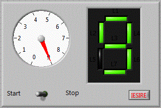
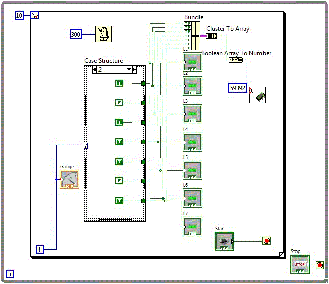
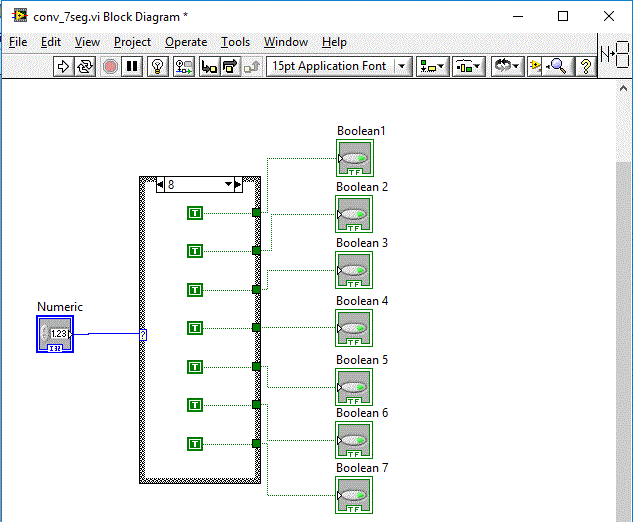
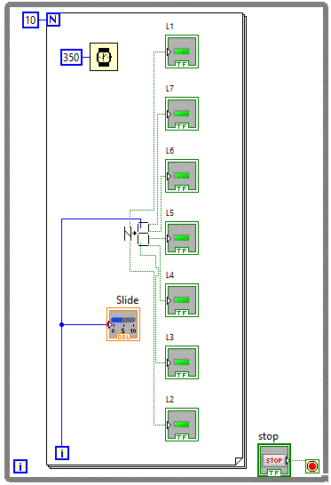

Teme program
- Afisati un numar pe 7 segmente
- Realizati un subvi convertor numeric-7 segmente.
- Realizati un afisor pe 7 segmente utilizand sub-vi convertor numeric-7segmente realizat anterior
1 Afisor 7 segmente afis_7seg

Diagrama logica fiind:

2 Subvi convertor numeric-7 segmente conv_7seg
Diagrama logica fiind:

3 Realizati un afisor pe 7 segmente utilizand sub-vi convertor numeric-7segmente afisaj_7seg
Diagrama logica fiind:
